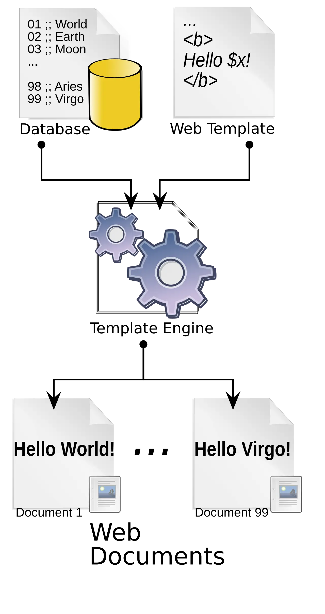

Short answer
A template-level defect is one rule that repeats on every URL of that type.
The diagram shows a data list and a template with a placeholder, processed into two finished pages. If that template omits the canonical element, both pages omit it. Editing one page in a CMS that does not control the template will be overwritten or will leave the other pages broken. SEO Health prioritizes the template. The sample URL proves the pattern. It is not the only page that matters, and it is not a case study with a metric.
Definition
Mika Visibility’s crawler notes say to prioritise template-level defects before page-by-page copy edits, and to attach why, how, and what happens if the finding is ignored. This article follows that order. Copy that is wrong on one URL can still be a page finding after the template is sound.
How the structure carries discovery
Sample one URL of the type, fix the shared layout, and re-fetch that URL plus one more of the same type.
A template that is right for products and wrong for documents is two templates. Do not “fix” the document pages by copying the product canonical logic if their URL rules differ. Write the finding with the type name. A re-audit that only opens the original sample can miss a second layout that still emits the defect.

What to check
- The defect repeated on a second URL of the same type
- The repair made in the shared layout
- A different type checked before copying the same fix
- A re-fetch after release
- Copy edits not used as a substitute for the layout
A practical example
Every product URL lacks a self-referencing canonical because the layout never prints one. The sample is a single valve URL. The repair is in the layout. A second valve URL is fetched after release to confirm the class changed. The words of the descriptions were never the defect.
What this does not claim
Fixing a template does not guarantee rankings or citations.
Where Mika Visibility files this
Mika Visibility reads architecture as SEO Health: whether important templates sit on a path from hubs the crawler can follow. Depth and orphans are structure. Uncovered buyer questions are SEO Growth. A tidy tree does not guarantee that a page is easy to quote, which is a GEO quality, not a promise of citation.
The two finished pages in the diagram come from one template, so a sample of one is evidence of the class.
FAQ
What is a template-level defect?
A template-level defect is one rule that repeats on every URL of that type.
How many URLs prove the pattern?
Sample one URL of the type, fix the shared layout, and re-fetch that URL plus one more of the same type.
Does a template fix guarantee rankings?
Fixing a template does not guarantee rankings or citations.
Next step
Run a structured SEO + GEO audit to see health findings, growth gaps, and a blueprint you can act on.
Clearer entities, answers, evidence, and context make pages easier to understand and reference. Results in any answer product are not guaranteed.